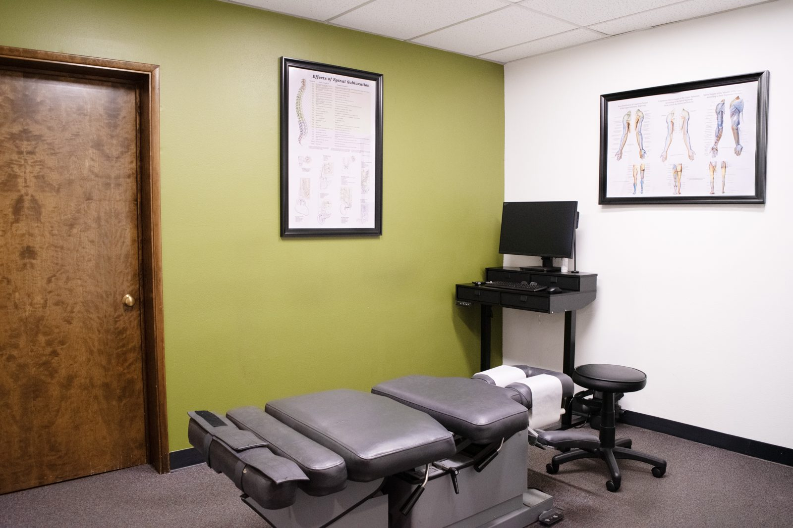

A car accident can rattle you even when the damage looks minor. Here in Milwaukie — and for our neighbors in Gladstone, Oregon City, Oak Grove, and across the Portland area — one of the most common things we hear is, "I felt fine at the scene, but a few days later my neck and back were killing me." That delay is exactly why the first days after a crash matter so much.
Why car-accident injuries are easy to miss
In the moments after a collision, your body floods with adrenaline. That surge can mask pain for hours or even days, which is why so many people decline care at the scene and only realize later that something's wrong. Whiplash and other soft-tissue injuries are especially sneaky — the stiffness, headaches, and radiating pain often set in 24 to 72 hours after impact, once the adrenaline fades and inflammation builds.
Getting evaluated early does two things: it catches injuries before they settle into chronic pain, and it creates a clear record that the injuries came from the crash.
How chiropractic care helps after an auto injury
Chiropractic care is a conservative, non-surgical, drug-free approach that's well suited to the strains, sprains, and joint dysfunction common after a collision. At Cedar Chiropractic & Auto Injury, Dr. Fred Seater starts with a thorough exam to understand exactly what was injured, then builds a plan that may include:
- Gentle spinal adjustments to restore normal motion to joints that locked up on impact.
- Cervical and lumbar traction to ease pressure on discs and nerves — helpful when a crash aggravates or causes a disc injury.
- Therapeutic ultrasound and electrical muscle stimulation (E-stim) to calm muscle spasm, reduce inflammation, and support soft-tissue healing.
- Rehabilitation exercises to rebuild strength and stability so the injury heals fully and is less likely to return.
The goal isn't just to take the edge off — it's to help your body recover properly so a "minor" accident doesn't turn into months of nagging pain.
You may not pay anything out of pocket to get started
Oregon requires personal injury protection (PIP) coverage on auto insurance policies. PIP typically pays for reasonable and necessary medical care after a crash — often regardless of who was at fault — which means many patients begin treatment with little or no upfront cost. We verify your benefits for you and bill your auto insurer directly, so you can focus on healing instead of paperwork. If an attorney is involved, we're happy to coordinate with them as well.
Documentation that supports your recovery — and your claim
Careful, consistent records do more than track your progress. If you're working through an insurance or personal-injury claim, thorough documentation of your injuries, treatment, and recovery timeline is often what makes the difference. We keep detailed notes from your first visit forward and can communicate directly with your insurer or attorney when needed.
What to do in the first days after a crash
Even if you feel okay, it's worth getting checked — the injuries that surface later are the ones that benefit most from early care. If you've been in an accident anywhere around Milwaukie, Gladstone, Oregon City, Oak Grove, or Portland, give us a call and we'll get you evaluated promptly.
Injured in a car accident?
Get evaluated early — it's better for your recovery and your claim. We'll verify your benefits and handle the billing.